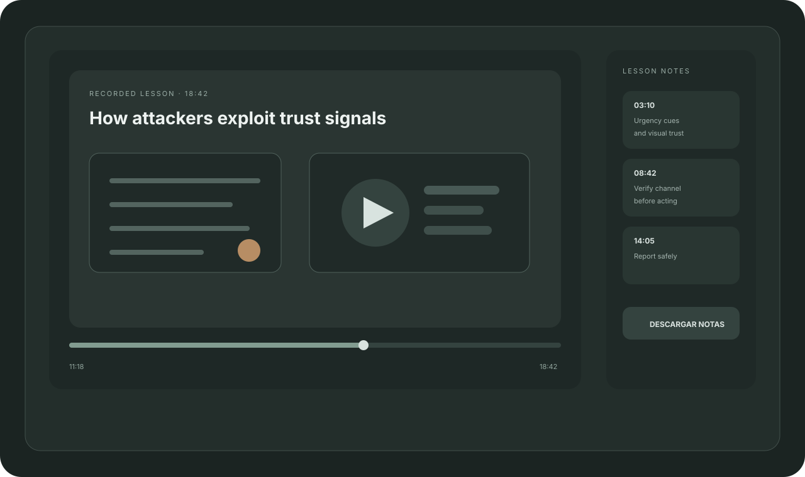
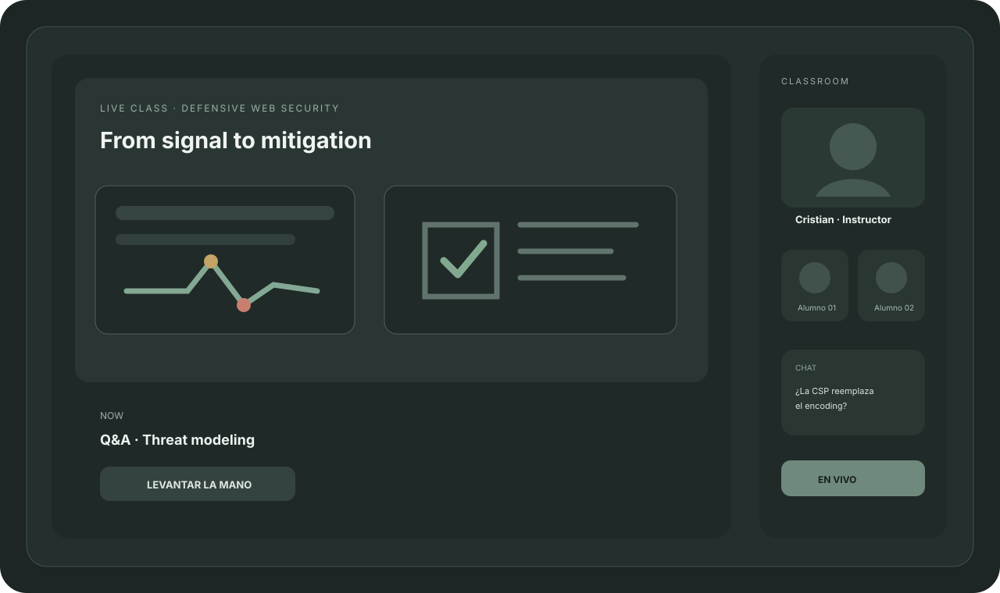
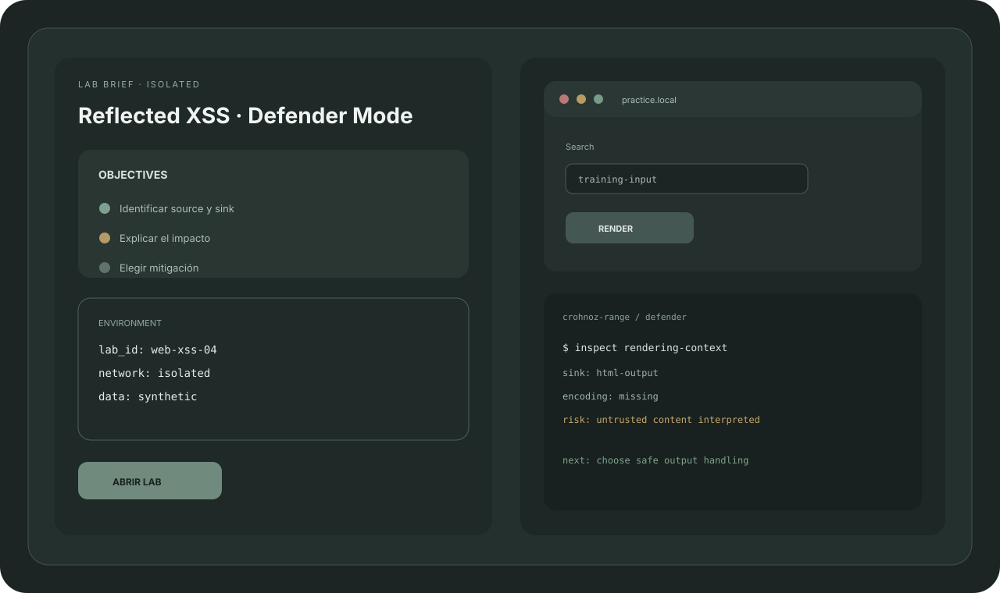
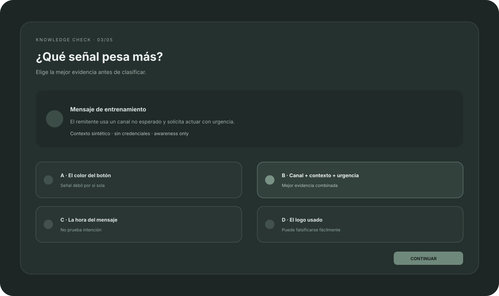

ASINCRÓNICO · 18 MINClase grabadaCapítulos · notas · replay
▶

EN VIVO · 60 MINClase sincrónicaInstructor · Q&A · replay
● LIVE

SIMULACIÓN · 15 MINAwareness InboxSeñales · decisión · feedback

LAB · 30 MINPractice workspaceSandbox · objetivos · evidencia

CHECKPOINT · 5 MINKnowledge checkPregunta visual · feedback inmediato